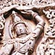
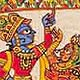
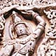
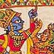
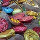
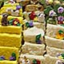
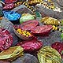
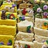

Govardhana-puja
This festival celebrates an astonishing event – little boy Krishna, holding Govardhana Hill like an umbrella, sheltering His beloved friends from devastating storms and floods.
Furthermore
Dates will vary according to where in the world you are. As a rule of thumb, in the Americas, Europe, and Africa it will fall on 2 November. In Asia and Australia it will fall on 3 November. Check your local centre for the correct timings for your area, or downlaod a Vaisnava calendar here.
Click here to read the story of Krishna lifting Govardhana Hill
More detailed accounts appear in Srimad-Bhagavatam, 10.24-7 and Anandana-vrindavana-campu, Chapter 15. These books can generally be purchased from krishna.com (USA) or Bhaktivedanta Library Services (Europe)
Govardhana Hill is in Vrindavana south of Delhi, and five-thousand years ago, Krishna, the Supreme Personality of Godhead, lifted it on the little finger of His left hand. The occasion is recorded in the sacred book, Srimad Bhagavatam, and millennia later, is celebrated world-wide, by thousands of people.
Festivals such as this help us explore and understand the deep mystery of Krishna’s extraordinary pastimes: how God, grave and awesome, appears as an enchantingly beautiful cowherd boy, just to have fun with His friends.
Although there are many layers of meaning in Krishna’s pastimes, an essential feature of this story, is the exchanged of deep love between Krishna and His devotees. To please Him, the residents of Vrindavana willingly gave up their secure customs and their very livelihood; in return Krishna protected them from the resulting catastrophe. Under the shelter of Govardhana Hill, Krishna related with each of His friends according to their individual desires: as a joking, playful friend with the cowherd boys; as a lover to the beautiful milk-maids; as a son to his parents. These intimate and exquisite loving exchanges, increased their attachment to Krishna and the devastating storms went by unnoticed.
All this while Krishna jauntily holds Mount Govardhana aloft, on the littlest finger of the weakest arm, as if to say, “I may look like a little boy, but I am God and though you may try, you can’t mess with Me!”
Devotees of Krishna celebrate this festival by reading and discussing the story amongst themselves and by congregating at their local temple to chant, dance, and offer mountains of sumptuous foodstuffs (especially sweets!) to Sri Giridhari – the lifter of Govardhana Hill.
Click here to read the story of Krishna lifting Govardhana Hill.
Verses glorifying Govardhan Hill
May that Sri Govardhana, on whom the deer are standing, gazing down the path in eagerness to see Sri Krsna, mistaking the rustling of the bamboo to be Sri Krsna's flute and thus becoming stunned in ecstasy, fulfill all my desires.
Srila Visvanatha Chakravati Thakura (17th century)
O Govardhana, you are decorated with beautiful pavilions of pearls and jewelled thrones shaded by trees, along with caves and valleys, where Krsna always plays with Balarama and the cowherd boys. I also long to witness those transcendental games. Kindly allow me to reside close to you.
Srila Raghunatha das Goswami (1495–1571)
More images
Click to enlarge (in new window)
 



 


